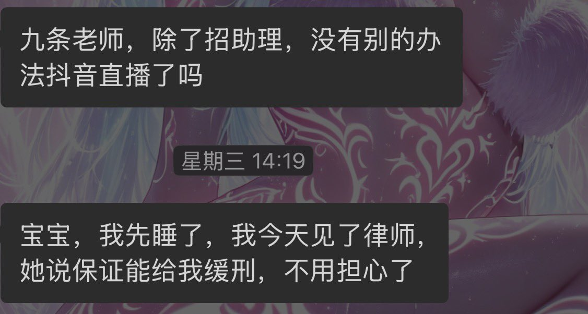

432InfantryRegiment
@432Ifantrygroup
@rercardo @liuzhaoqiang2 @KawasawaSen 根据《律师执业管理办法》，律师是严禁向当事人承诺案件判决结果的。
你能确定她这个律师靠谱吗？

九条南无
@rercardo
@liuzhaoqiang2 @KawasawaSen 取保了 村里的法律没说取保期间不让直播赚钱 本来想在dy播的 但是b站管的松 处理这个事情是要花很多米的 大家给桔梗老师刷一点礼物吧 她真的是个可怜人 https://t.co/1by1rnjrow